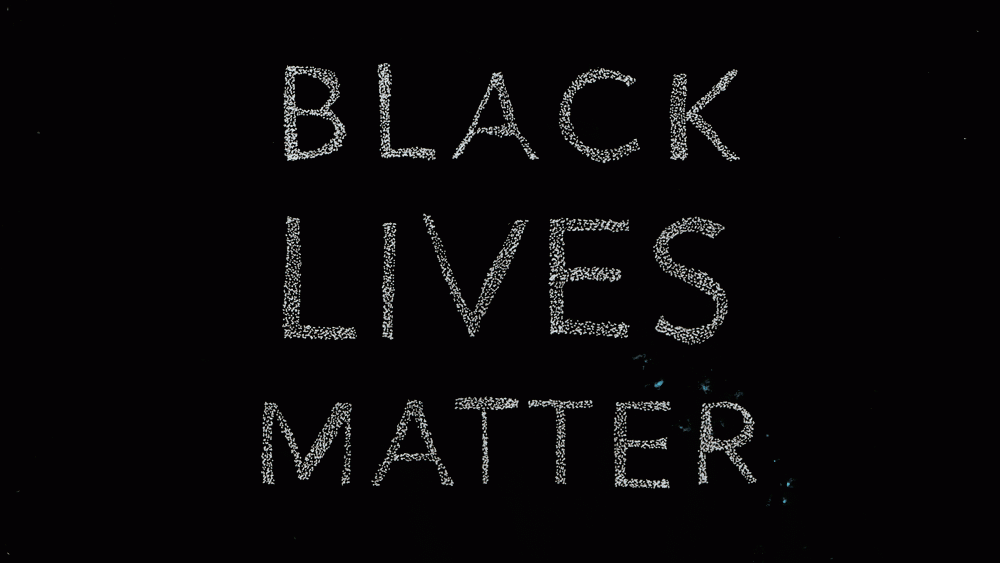

Racism, which is defined as prejudice or discrimination directed towards a certain race due to a feeling of superiority, has been present since the begginning of time. However recently, it has become a very serious problem. Many groups are being targeted influenced by global events and outdated mindsets. At the moment, it is very important that people are educated and spread love.
*Make sure you pause the video at the end of this page before continuing*
The organizations below will help allow to contribute and fix this problem:
- Black Lives Matter
- LULAC
- MSA
- Race Forward
Black Lives Matter is a chapter-based national organization working for the validity of Black life. They work to (re)build the Black liberation movement. There are many local chapters and local/national events to get involved in. To learn more, click on the image below!
The LULAC Organization, which stands for League of United Latin American Citizens, strives to improve civil rights for Latin-American citizens in the United States. Through various education, leadership, health, and economic programs, LUPAC does a lot of work to improve the race-gap. Their goal is to contribute to the community and raise awareness. People who are of all ages, including youths, have a platform for their voices. Click the picture below to learn more!
The MSA Organization, which stands for Muslim Student Association,is an organization for youth to learn more about Islam, contribute to the community, and spread peace. This association often exists in high schools and universities, however there are many opportunities to start them elsewhere. Click the picture below to learn more!

Race Forward advances racial justice through research, media, and practice. Founded in 1981, Race Forward brings systemic analysis and an innovative approach to complex race issues to help people take effective action toward racial equity. Its mission is to build awareness, solutions, and leadership for racial justice by generating transformative ideas, information, and experiences.Click the picture below to learn more!
This video explains how one could get involved to combat racism, at a very subdued level.